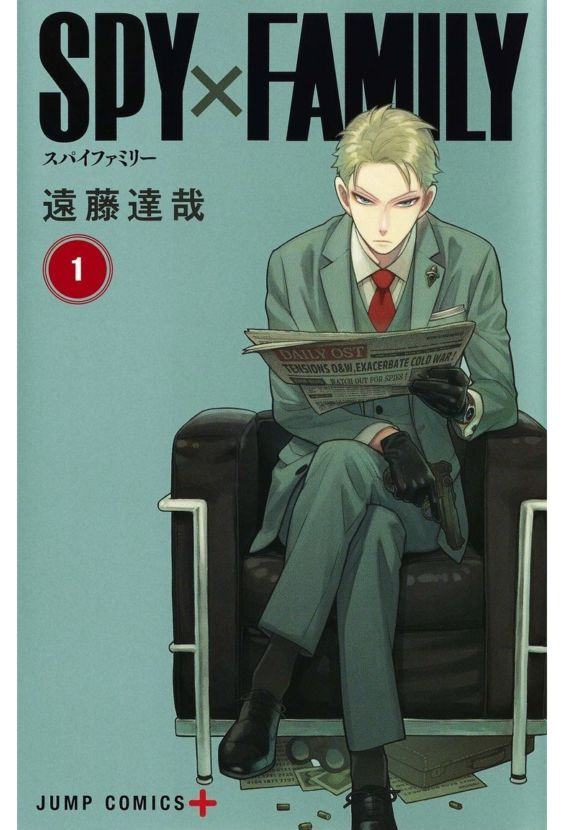

Spy X Family - Tatsuya Endo
Sinopse
Uma comédia cheia de ação sobre uma família falsa que inclui um espião, um assassino e um telepata! O mestre espião Twilight é incomparável quando se trata de se infiltrar em missões perigosas para melhorar o mundo. Mas quando ele recebe a missão final – casar e ter um filho – ele pode finalmente estar perdido! Não sendo alguém que depende dos outros, Twilight tem um trabalho difícil para conseguir uma esposa e um filho para sua missão de se infiltrar em uma escola particular de elite. O que ele não sabe é que a esposa que escolheu é uma assassina e a criança que adotou é uma telepata!